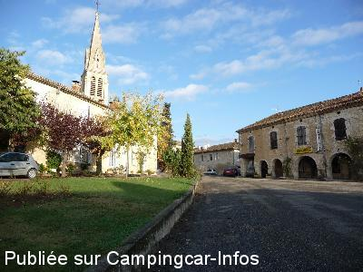
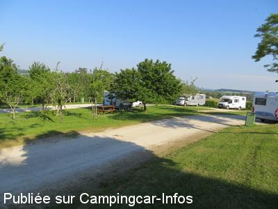
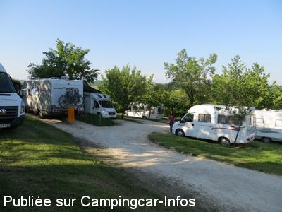
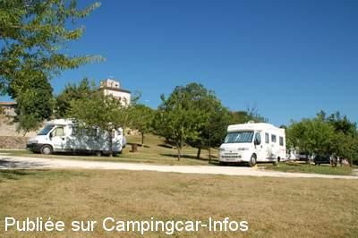
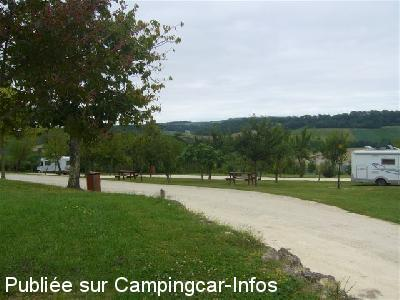

ASN = Aire de services avec stationnement nuit possible de :
SAINT CLAR
(N° 591)
Accès/adresse :
Avenue de la Garlepe
32380 SAINT CLAR
32380 SAINT CLAR
Latitude : (Nord) 43.89123° Décimaux ou 43° 53′ 28′′
Longitude : (Est) 0.77281° Décimaux ou 0° 46′ 22′′
Tarif : Gratuit
Type de borne : Autre
Services :


Jeux
Aire de pique-nique
Commerces à proximité
Marché le jeudi
Autres informations :
Ouvert toute l'année
10 emplacements
Tel : +33(0)562 664 045
Musée de l'école

Le 20/01/2015 par TONY16

Le 04/06/2012 par bernard 59

Le 04/06/2012 par bernard 59

Le 08/09/2010 par Gérard Degenne

Le 17/02/2009 par Patricia Corcoran
de
guy lefevre
le 14/10/2015 :
Super aire près du trés beau village qui vaut le dètour stationement ,eau et vidange pour 0€ merci et bravo à saint clar
Guy
Super aire près du trés beau village qui vaut le dètour stationement ,eau et vidange pour 0€ merci et bravo à saint clar
Guy
de
ixeo23
le 06/07/2015 :
De passage le 3 juillet 2015. Aire propre eau, vidange mais nous n'avons pas vu de douche et wc; parlons-nous de la même aire ?! attention aux branches basses , avons accroché notre camping car; cales indispensables.
De passage le 3 juillet 2015. Aire propre eau, vidange mais nous n'avons pas vu de douche et wc; parlons-nous de la même aire ?! attention aux branches basses , avons accroché notre camping car; cales indispensables.
de
Henri
le 18/08/2014 :
En juillet 2014 les services fonctionnent. Pour l'achat de fruits et légumes je conseille le palais de l'ail face à la porte de l'église. Le gars est très sympa et les prix sont corrects.
En juillet 2014 les services fonctionnent. Pour l'achat de fruits et légumes je conseille le palais de l'ail face à la porte de l'église. Le gars est très sympa et les prix sont corrects.
de
Catherine
le 26/03/2014 :
Je me suis arrêté en mars 2014, touts les services eau WC étaient fermés
J'ai eu quelques difficultés à trouver un endroit assez plan pour me garer.
Ceci étant, très calme, proche du bourg à pied
Merci à la municipalité
Je me suis arrêté en mars 2014, touts les services eau WC étaient fermés
J'ai eu quelques difficultés à trouver un endroit assez plan pour me garer.
Ceci étant, très calme, proche du bourg à pied
Merci à la municipalité
de
ESCARGOT21
le 25/08/2013 :
§
Au hasard de notre itinérance, nous sommes arrivés sur cette aire. Quelle agréable surprise ! 10 emplacements bien aménagés au milieu des arbres fruitiers, des tables de pique-nique, de la place pour que les enfants puissent courir en toute tranquillité vidange et eau propre. Tout ça pour 0 euro ! Merci à la municipalité. Voilà une aire comme on les aime ! De plus, le village est très joli et dispose de commerces. Pour ceux qui s'inquiètent de la proximité de la route, il y a très peu de circulation la nuit et nous avons dormi comme des loirs. Un seul petit bémol à noter : l'entrée de l'aire est un peu pentue et vu les traces sur la chaussée, certains CC ont dû frotter. Nous reviendrons.
§
Au hasard de notre itinérance, nous sommes arrivés sur cette aire. Quelle agréable surprise ! 10 emplacements bien aménagés au milieu des arbres fruitiers, des tables de pique-nique, de la place pour que les enfants puissent courir en toute tranquillité vidange et eau propre. Tout ça pour 0 euro ! Merci à la municipalité. Voilà une aire comme on les aime ! De plus, le village est très joli et dispose de commerces. Pour ceux qui s'inquiètent de la proximité de la route, il y a très peu de circulation la nuit et nous avons dormi comme des loirs. Un seul petit bémol à noter : l'entrée de l'aire est un peu pentue et vu les traces sur la chaussée, certains CC ont dû frotter. Nous reviendrons.
de
collomb
le 19/07/2013 :
Très belle aire au milieu d'arbres fruitiers... Calme avec eau et vidange (eaux salles et cassettes) Que du bonheur. Petite rectification au mois de juillet 2013 l'eau de la douche n'était plus chaude.
Très belle aire au milieu d'arbres fruitiers... Calme avec eau et vidange (eaux salles et cassettes) Que du bonheur. Petite rectification au mois de juillet 2013 l'eau de la douche n'était plus chaude.
de
Christiane 73
le 11/11/2012 :
Nous sommes passés à Saint Clar, début Octobre......... Jolie aire, agréable! Merci à la municipalité! Nous repasserons dans cette commune,un village tel qu'on les aime, avec plaisir......
Nous sommes passés à Saint Clar, début Octobre......... Jolie aire, agréable! Merci à la municipalité! Nous repasserons dans cette commune,un village tel qu'on les aime, avec plaisir......
de
MarWill
le 01/04/2012 :
Bivouac du 17-03, Stationnement bien agencé, nuit calme. Beau village, superbe place de la halle ;-)
Bivouac du 17-03, Stationnement bien agencé, nuit calme. Beau village, superbe place de la halle ;-)
de
soum edmond et christiane
le 20/09/2011 :
Merci a la municipalité pour cette jolie petite aire bien sur il faut calé mais on ne peu pas tout avoir la tranquillitée. l'eau . l'emplacement. l'aire tres bien entretenue. et tout ça gratuitement nous etions l'a le 17 aout pour la foire a l'ail tres bien et super acceuil par les commmercants
merci encore et a tres bientot nous reviendrons
Edmond et christiane
Merci a la municipalité pour cette jolie petite aire bien sur il faut calé mais on ne peu pas tout avoir la tranquillitée. l'eau . l'emplacement. l'aire tres bien entretenue. et tout ça gratuitement nous etions l'a le 17 aout pour la foire a l'ail tres bien et super acceuil par les commmercants
merci encore et a tres bientot nous reviendrons
Edmond et christiane
de
P. du 49
le 01/09/2011 :
De passage dans le mois d'aout 2011 , cette aire est un modèle un GRAND MERCI à Mr le Maire et son équipe .
Aire avec emplacement individuelle superbe encore merçi à la commune de St Clar
De passage dans le mois d'aout 2011 , cette aire est un modèle un GRAND MERCI à Mr le Maire et son équipe .
Aire avec emplacement individuelle superbe encore merçi à la commune de St Clar
de
Rieu
le 29/07/2010 :
Une aire fort sympathique où il fait bon se détendre au calme sur un espace bien entretenu ! Après quoi, la gratuité de l'accueil est sans doute le choix le plus intelligent que puisse faire une commune pour que les touristes éprouvent naturellement l'envie de revenir (ce n'est d'ailleurs pas le commerce local qui pourrait s'en plaindre).
Dommage qu'une fois les dix emplacements occupés, d'autres camping-caristes s'installent tardivement le long des voies de circulation (c'est ainsi que peuvent apparaître parfois les restrictions, les interdictions, les fermetures...)
Une aire fort sympathique où il fait bon se détendre au calme sur un espace bien entretenu ! Après quoi, la gratuité de l'accueil est sans doute le choix le plus intelligent que puisse faire une commune pour que les touristes éprouvent naturellement l'envie de revenir (ce n'est d'ailleurs pas le commerce local qui pourrait s'en plaindre).
Dommage qu'une fois les dix emplacements occupés, d'autres camping-caristes s'installent tardivement le long des voies de circulation (c'est ainsi que peuvent apparaître parfois les restrictions, les interdictions, les fermetures...)
de
Joan Cecil
le 29/07/2009 :
Merci St Clar! This must be one of the best Aires in France. Well done to the Mayor and the Commune.
Merci St Clar! This must be one of the best Aires in France. Well done to the Mayor and the Commune.
de
paret jean-claude
le 19/03/2009 :
Très belle aire de repos, bravo à la municipalité Douches chaudes le pied, village superbe, balade en vélo au plan d'eau.
Très belle aire de repos, bravo à la municipalité Douches chaudes le pied, village superbe, balade en vélo au plan d'eau.
de
Lemidou
le 07/07/2008 :
Très belle aire bien organisée, très belle vue, seul petit défaut pour les places le long de la route, le bruit la nuit. Mais ne soyons pas difficile, l'étape est très agréable à coté d'un très joli village. Signalons les sanitaires avec douche et WC très propres.
Très belle aire bien organisée, très belle vue, seul petit défaut pour les places le long de la route, le bruit la nuit. Mais ne soyons pas difficile, l'étape est très agréable à coté d'un très joli village. Signalons les sanitaires avec douche et WC très propres.
de
Solange et Michel MOREAU 33500 - LIBOURNE
le 06/02/2007 :
Félicitations à la municipalité de St Clar. Cette aire est toujours aussi agréable et bien entretenue, nous y sommes revenus passer la nuit du 3 au 4 février. Le village est très près ce qui permet de faire une petite promenade. C'est avec plaisir que nous y reviendrons lorsque nous passerons dans la région. Ce sont souvent les petits villages qui offrent des aires pour camping-cars les plus agréables. Je pense à l'aire de Bardigue qui se trouve dans le Tarn et Garonne, pas très loin de St Clar
Félicitations à la municipalité de St Clar. Cette aire est toujours aussi agréable et bien entretenue, nous y sommes revenus passer la nuit du 3 au 4 février. Le village est très près ce qui permet de faire une petite promenade. C'est avec plaisir que nous y reviendrons lorsque nous passerons dans la région. Ce sont souvent les petits villages qui offrent des aires pour camping-cars les plus agréables. Je pense à l'aire de Bardigue qui se trouve dans le Tarn et Garonne, pas très loin de St Clar